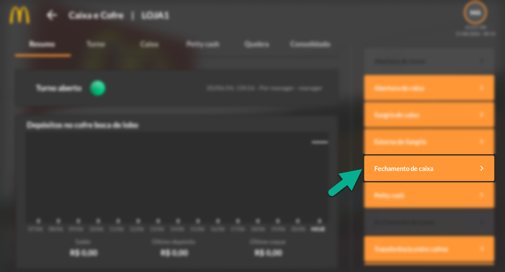
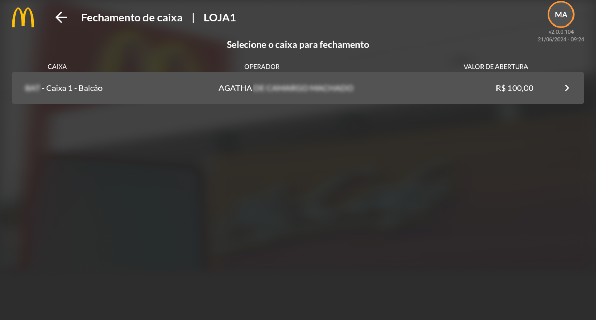
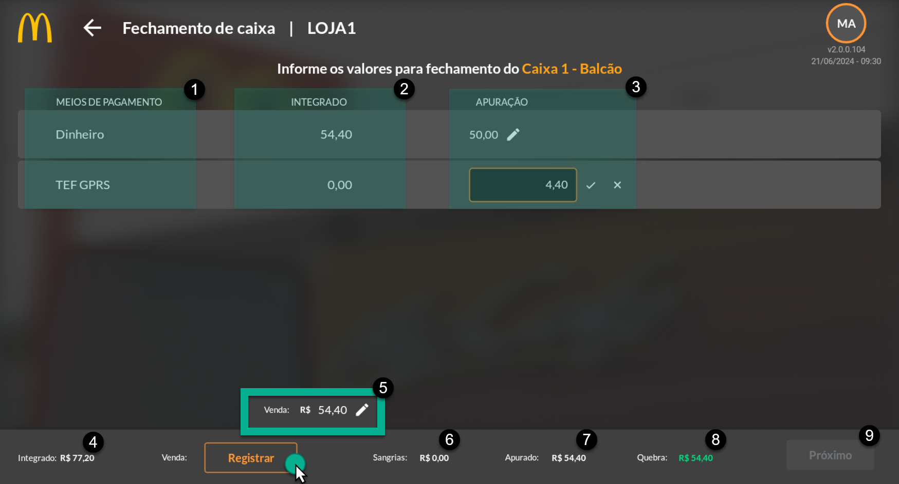
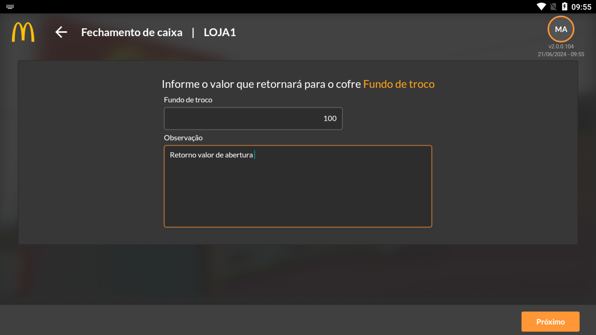
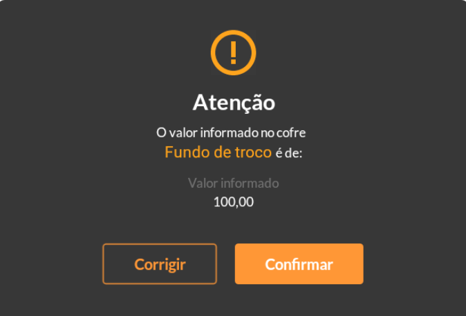
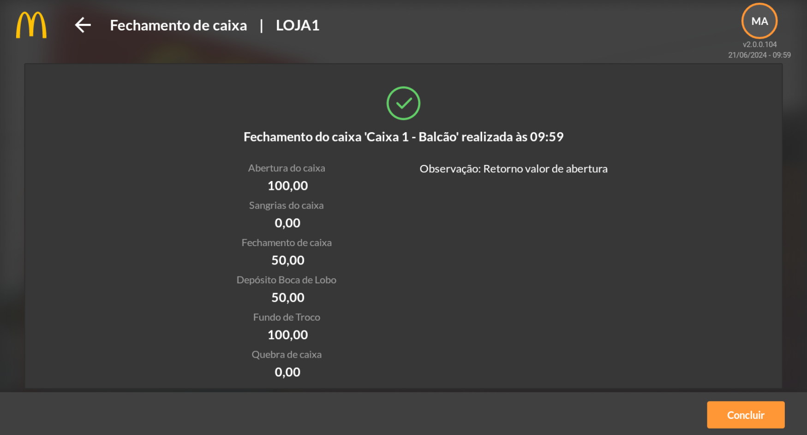
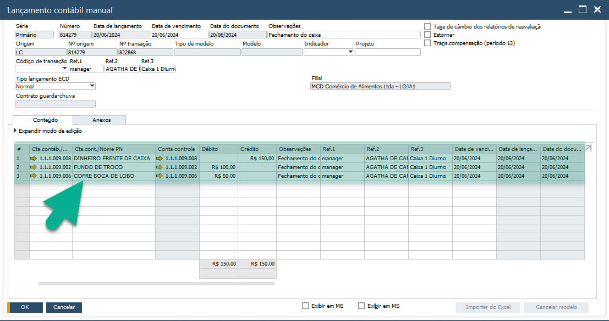

Fechamento de Caixa
O fechamento de caixa é responsável pela apuração das vendas realizadas principalmente em dinheiro. Vendas por outros meios de pagamentos são conciliadas pela conciliadora de cartões, vouchers e PIX Atos Capital.
O módulo não está integrado com o POS. Sendo assim, caso deseje informar os demais meios de pagamentos será necessário o preenchimento das informações de acordo com a fita do caixa.
Além disso, serão demonstrados os valores vendidos considerando os meios de pagamentos na emissão do cupom fiscal. Porém, a informação utilizada na contabilização e geração de relatórios serão as informadas pelo operador/gerente da loja.
Acesse o módulo do aplicativo para realizar os lançamentos.
{kind=link}
Ao clicar em fechamento de caixa, serão apresentados os caixas disponíveis para fechamento, contendo a informação do POS/Caixa, Operador e Valor de abertura.
{kind=link}
Na sequência, será possível informar os valores reais apurados pelo caixa, considerando a fita.
{kind=link}
Considerando o caixa acima, temos dois meios de pagamentos registrados para lançamentos. Lembre-se que os caixas não serão impedidos de vender caso os demais meios de pagamentos não estejam listados nesta tela. Nesta tela é possível cadastrar todos os meios de pagamentos disponíveis, mas o objetivo é que seja utilizada para as apurações em dinheiro.
No exemplo, a franquia visando o controle das apurações em dinheiro, cadastrou apenas os vínculos com DINHEIRO e TEF GPRS (1) para possíveis ajustes finais de lançamentos realizados de forma indevida.
As informações na coluna INTEGRADO (2) referem-se aos lançamentos registrados nos cupons fiscais emitidos para o PDV vinculado. São informações recebidas pelo OOBJ (mensageria).
Os registros serão de fato considerados levando em conta o registrado em APURAÇÃO (3). São essas as informações que gerarão lançamentos contábeis no SAP.
EXEMPLO: As vendas registradas como dinheiro estão com o valor de R$54,40. Porém, no momento da venda o operador registrou o meio de pagamento de forma indevida, sendo que R$4,40 se refere a venda por meio de GPRS. O ajuste foi feito em apurações da tala de fechamento de caixa, informando R$50,00 para dinheiro e R$4,40 em GPRS. Com isso, o lançamento indevido será ajustado.
O total das integrações ficarão registrado em INTEGRADO (4), esse campo não poderá ser modificado.
O valor total das vendas registradas em apurado deverá ser informado em VALOR (5), informações divergentes serão lançadas como quebra de caixa.
Teremos ainda as informações de SANGRIAS (6) lançadas (considerando apenas as que não foram estornadas), o total APURADO (7) informado em valor e a QUEBRA (8) de caixa.
IMPORTANTE: Considere para fechamento os valores reais disponíveis em caixa. Note que se no caixa está registrado R$50,00 em dinheiro, mas houve lançamento de sangria de R$20,00 que não foi estornada, na apuração do caixa deverá ser informado o valor que de fato estará disponível, sendo R$30,00. Ao lançar o valor de R$50,00, considerando essa sangria, será registrado como quebra de caixa o valor de R$20,00.
Clique em próximo seguir com o processo de fechamento.
{kind=link}
Informe o valor que retornará para o cofre fundo de troco, defina a observação e clique em próximo.
Será apresentado uma mensagem de confirmação do valor informação para registro no Fundo de Troco. Realize alterações, se necessário. Caso o valor esteja correto, confirme o valor.
{kind=link}
O resumo do fechamento será demonstrado na tela do aplicativo para visualização. Clique em concluir.
{kind=link}
O processo de fechamento de caixa será registrado e irá gerar um lançamento contábil manual de forma automática no SAP considerando DÉBITO de FUNDO DE TROCO e COFRE BOCA DE LOBO e CRÉDITO em DINHEIRO FRENTE DE CAIXA.
{kind=link}
As parametrizações das contas contábeis utilizadas para esses lançamentos foram previamente configuradas em Configurações por Filial demonstrado na Introdução do manual.
Realize o mesmo processo para fechamento dos demais caixas antes de seguir para o processo do próximo tópico deste manual.